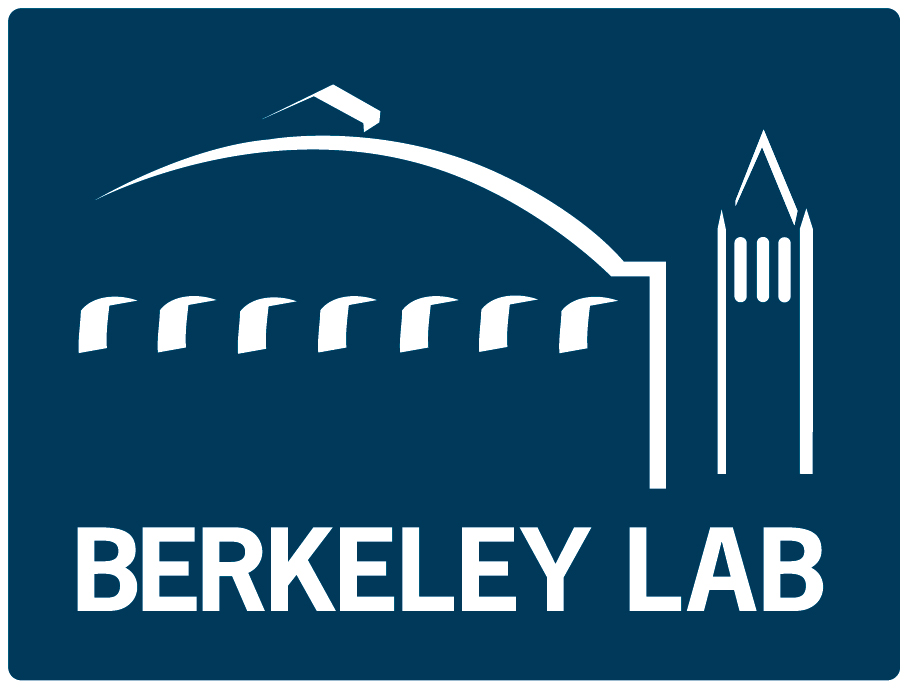
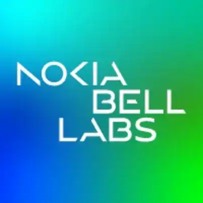
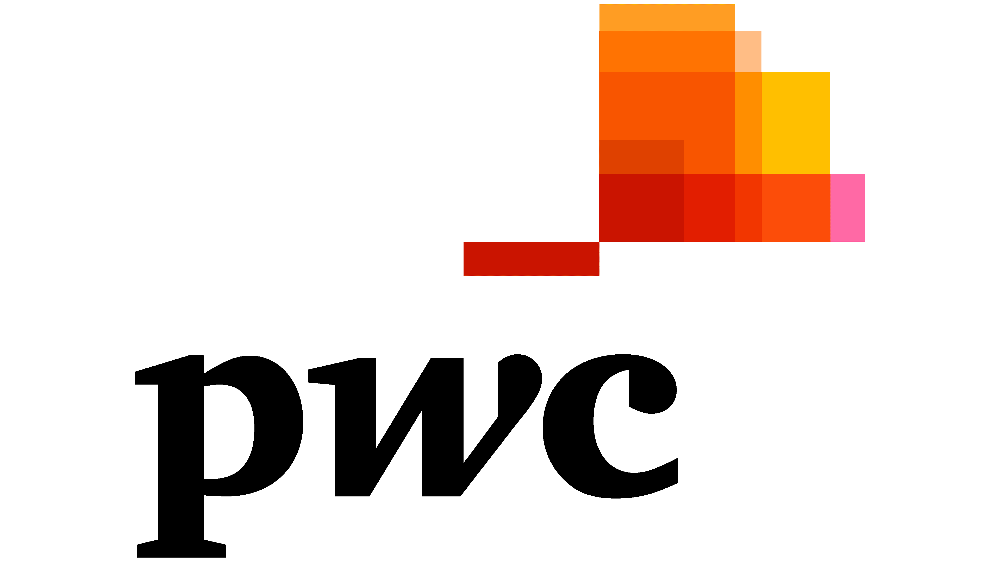
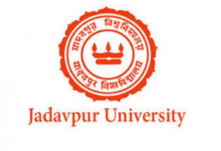

Work Experience
Software Engineer III (L4), Google Cloud
Seattle, WA, USASep 2024 — Present
- Bare Metal: I engineer Google Cloud Platform (GCP) solutions to develop, maintain, and operationalize Bare Metal cloud solutions for demanding applications. The Google Computing Engine (GCE) Node Bare Metal servers allow users to run specialized high-performance workloads, e.g., third-party virtualization software, applications with low-level access to the server, computationally demanding AI workloads, etc. Our team manages the regionally distributed cluster of servers with high-performance connection with a low-latency network fabric.
- I worked on the first arm-based bare metal shape Google Cloud developed in 2025-2026. Here is a Google Cloud Blog as the public announcement of of the product.
- AI tooling: I made a small sub-team of 4 engineers and led the development of an agentic AI tool for a tier-2 oncall (with SLO of 30 minutes) for GCE Bare Metal team.
- Hackathon: I led the small team for a hackathon entry for AI2 hackathon with an early version of the oncall AI tool.
- Volunteer: I took ~20 Google Champion calls (mock interviews).
Software Engineering Ph.D. Intern, YouTube
San Bruno, CA, USAMay 2023 — Aug 2023
- UVQ for YouTube Shorts: I collaborated closely with the playback experience, media algorithms, transcoding, and edge streaming teams and extended UVQ to YouTube Shorts. As part of this work, I evaluated multiple ML models through A/B testing to comprehend subjective perception of video quality and learn from contextual factors (such as content type, device type, geolocation, and other streaming objectives). Here is a Google Research Blog that introduces UVQ model.
- Intern Learning: Personal Branding, Fundamentals of Innovation, Impactful Performance Writing.
- Volunteer: I helped job seekers by reviewing their resume.
Graduate Teaching Assistant
Stony Brook, NY, USAJan 2023 — Apr 2023
- Graded papers and homework assignments, proctored exams, and took weekly office hours...
Research Project Assistant
Stony Brook, NY, USAJun 2019 — Dec 2022
- Cache-efficient algorithms: Designed an empirical framework...
- Machine-learning augmentation: Explored algorithm-design...

Visiting Research Student Intern
Lawrence Berkeley National Laboratory | Berkeley, CA, USA
Sep 2023 — Dec 2023
- Dynamic GAP: Designed an experimental framework to study the performance of external-memory algorithms (APIs) for large sparse dynamic graphs.

Cloud and Networking Intern
Nokia Bell Labs | Murray Hill, NJ, USA
Jun 2022 — Aug 2022
- Designed out-of-band ML-based prediction augmented congestion control algorithms... [Under NDA]
- Completed Harvard ManageMentor Leading People by Harvard Business Publishing.
Graduate Assistant & Mentor
Stony Brook University | Stony Brook, NY, USA
Sep 2018 — Apr 2023
Graduate Teaching Assistant [Jan'23 — Apr'23]
- Graded papers and homework assignments, proctored exams, and took weekly office hours...
Research Project Assistant [Jun'19 — Dec'22]
- Cache-efficient algorithms: Designed an empirical framework to evaluate when (a, b, c)-regular algorithms are cache-adaptive...
- Machine-learning augmentation: Explored a recently developed algorithm-design framework...
- Filesystem aging: Wrote Bash scripts to test synthetic micro- and macro-benchmark...
Mentor (HS-WISE) & Teaching Assistant [Sep'18 — Present]
- Taught high-school students a lesson named as Basics of Probability and Thinking Algorithmically.
- Graded programming assignments using Python scripts and took weekly office hours...

Research Engineer
National University of Singapore | Singapore
May 2018 — Aug 2018
- Reviewed the performance of Multi Objective Evolutionary Algorithm based on Decomposition (MOEAD) techniques experimentally using Matlab.

Consultant, Technology Consulting
Pricewaterhouse Coopers India | Kolkata, WB, India
Jul 2016 — Sep 2017
- Implemented the Microsoft Navision enterprise resource planning software (ERP) 2016... [Under NDA]
- Built a payroll automation system using DotNet technologies... [Under NDA]
- Activities: Performed the roles of a speaker and a reviewer in the Toastmasters International Club.

Undergraduate Research Assistant
Jadavpur University | Kolkata, WB, India
Jun 2015 — May 2016
- Designed algorithms for affective computing and programmed a methodology to detect emotion...
- Designed algorithms for biomedical image processing and cancer detection...
Undergraduate Summer Intern
IIT Kharagpur | Kharagpur, WB, India
Jun 2014 — Aug 2014
- Designed a portable electronic device for non-invasive continuous measurement of blood pressure...